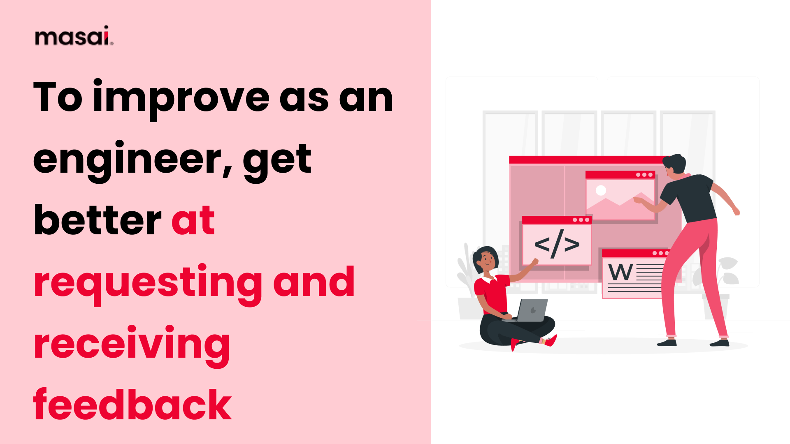

Syllabus
Analyse and respond to feedback
Learning Intention and Success Criteria
Learning Intention - Students will:
- To understand how to effectively analyse and respond to feedback in the context of software engineering, enhancing the quality and functionality of software products.
Success Criteria - Students can:
- Identify different types of feedback relevant to software engineering.
- Analyse feedback for actionable insights to improve software projects.
- Develop strategies for incorporating constructive criticism into the development cycle.
- Evaluate the impact of responding to feedback on project success and team dynamics.
Content
Feedback is a critical component of the software development lifecycle. It provides developers, project managers, and other stakeholders with essential insights into how the software performs, whether it meets user requirements, and where improvements are needed. Effective feedback analysis ensures that projects evolve to meet user needs and maintain high standards of quality and performance.
Types of Feedback in Software Engineering:
In software engineering, feedback can be categorised into the following key types:
-
User Feedback: This comes directly from end-users who interact with the software. It often relates to user experience (UX), usability, and functionality. Users may highlight bugs, suggest new features, or express difficulties in navigating the software.
-
Stakeholder Feedback: Feedback from clients, project sponsors, and business stakeholders is crucial. It focuses on whether the software aligns with the project goals, meets business needs, and satisfies project constraints (such as time and budget).
-
Peer or Team Feedback: Developers, testers, and other team members provide peer feedback during code reviews, sprint reviews, and collaborative problem-solving sessions. This type of feedback focuses on technical quality, code efficiency, and adherence to standards.
-
Automated Feedback: Tools like Continuous Integration (CI) pipelines, static analysis tools, and automated testing frameworks generate feedback regarding code quality, performance, and reliability. These feedback mechanisms help catch issues early in the development process.
Analysing Feedback
The ability to critically evaluate feedback is essential to the success of a software project. The steps to analyse feedback include:
-
Categorisation: Sort feedback based on its nature and origin (user, peer, stakeholder, or automated). This helps developers prioritise and handle feedback efficiently.
- Example: User-reported bugs should be prioritised differently from automated performance warnings.
-
Validity and Relevance: Not all feedback is equally valuable. Developers must assess whether feedback is relevant, aligns with the project’s goals, and is feasible to implement.
- Example: A feature request that aligns with the project scope and user needs is more actionable than a request that falls outside the intended purpose of the software.
-
Impact Analysis: Evaluate how implementing changes based on the feedback will affect the software, including its architecture, performance, or user satisfaction. Some changes may introduce new issues, requiring further adjustments.
- Example: A user might suggest an interface change that improves usability but adds complexity to the codebase. The impact on both usability and technical debt should be considered.
-
Urgency and Priority: Address high-priority feedback first. For example, critical bugs affecting software functionality or security take precedence over minor cosmetic issues.
Responding to Feedback
Once feedback has been analysed, it’s essential to act on it efficiently and transparently. The following strategies can guide the response:
-
Incorporation into Agile Processes: In Agile software development, feedback is often gathered and incorporated during sprints. User stories, tasks, or bugs can be created based on feedback, ensuring it is formally included in the development cycle.
- Example: A bug reported by a user during beta testing can be included as a task in the next sprint, ensuring it is addressed promptly.
-
Communication: Keeping stakeholders and users informed about how their feedback is being handled builds trust and ensures alignment between developers and project goals.
- Example: Regular updates during sprint reviews or feedback channels, such as forums or emails, allow users to see how their feedback has influenced development.
-
Iterative Improvement: Responding to feedback should be an ongoing process. Iterating based on feedback during multiple development cycles helps improve software gradually.
- Example: An initial release may receive feedback about performance issues. Subsequent releases should address these issues, and new feedback should guide further refinement.
-
Balance Between New Features and Bug Fixes: It’s important to balance responding to feature requests with maintaining software stability. While new features may enhance user satisfaction, unresolved bugs or performance issues can degrade user experience.
- Example: Implementing a new feature from user feedback is great, but not if it causes significant regressions or introduces critical bugs.
-
Learning from Feedback: Feedback provides a valuable learning opportunity for developers. Constructive criticism from peers and code reviews can enhance technical skills, improve collaboration, and help ensure better design choices.
- Example: If feedback identifies inefficient code patterns, the development team can use this to improve coding standards and ensure better performance in future iterations.
Callout Heading
- Improved Software Quality: Timely and constructive feedback leads to a more polished, stable, and user-friendly product.
- Increased User Satisfaction: Addressing user feedback fosters a sense of community and trust, ensuring that users feel heard and valued.
- Enhanced Collaboration: Regular peer reviews and open feedback improve team collaboration and lead to better code quality.
- Continuous Improvement: An iterative feedback-response loop ensures continuous software enhancement, avoiding stagnation and helping meet evolving user needs.

Theory
- Direct the students to an activity to be completed in their OneNote
Practical
- Provide instructions for a practical activity or direct the students to an EdStem activity
Sources
- List sources here